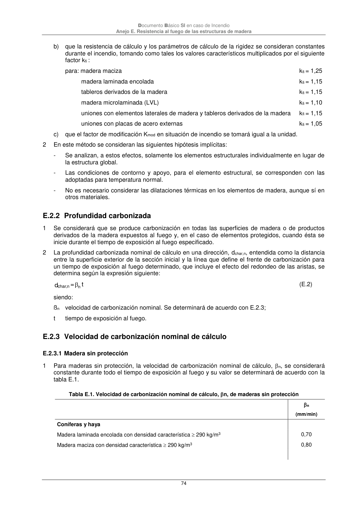

DB-SI · E.2.3 Velocidad de carbonización nominal de cálculo · versión 2025-03-04 · capa oficial
Formatos: JSON compacto · Markdown · PDF fuente
Ámbito del documento · texto del ámbito · documento y tablas
ID técnico a0199 · PDF pág. 74 · jerarquía no validada por persona · contrastado con el literal de la página 74 (marcador PDF); no validado por persona · padre: a0195
E.2.3 Velocidad de carbonización nominal de cálculo E.2.3.1 Madera sin protección 1 Para maderas sin protección, la velocidad de carbonización nominal de cálculo, n, se considerará constante durante todo el tiempo de exposición al fuego y su valor se determinará de acuerdo con la tabla E.1. Tabla E.1. Velocidad de carbonización nominal de cálculo, n, de maderas sin protección n (mm/min) Coníferas y haya Madera laminada encolada con densidad característica 290 kg/m3 0,70 Madera maciza con densidad característica 290 kg/m3 0,80

PDF fuente redistribuible: copia fiel enlazada en esta página (SHA256 verificado).